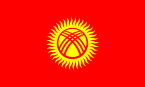
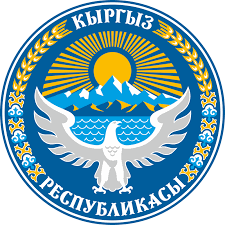

Кыргызстан
 Кыргызская республика — государство в Центральной Азии, расположенное в западной и центральной части горной системы Тянь-Шань и на Памиро-Алае. На севере граничит с Казахстаном, на западе — с Узбекистаном, на юго-западе — с Таджикистаном, на востоке и юго-востоке — с Китаем.
Столица — Бишкек, является самым населённым городом республики, постоянное население которого на начало 2020 года — 1 053 900 человек. Второй город по населению — Ош.
Киргизия является президентской, светской, унитарной республикой.
Государственный язык — киргизский, официальный — русский.
Денежная единица — киргизский сом.
По площади территории страна занимает 85-е место в мире (199 951 км²), 7-е место среди стран СНГ.
Страна занимает 110-е место в мире по численности населения. 25 ноября 2015 родился 6-миллионный гражданин Киргизии.
Киргизия является членом ООН, СНГ, Евразийского экономического союза, Организации Договора о коллективной безопасности, Шанхайской организации сотрудничества, Организации исламского сотрудничества, Организации тюркских государств, ТЮРКСОЙ.
Киргизы составляют большинство населения страны, наиболее крупными этническими меньшинствами являются узбеки и русские. Киргизский язык активно используется и тесно связан с другими тюркскими языками Центральной Азии, Кавказа, Поволжья и Южной Сибири, хотя русский язык также широко распространён и является официальным языком. Большинство населения — мусульмане-сунниты.